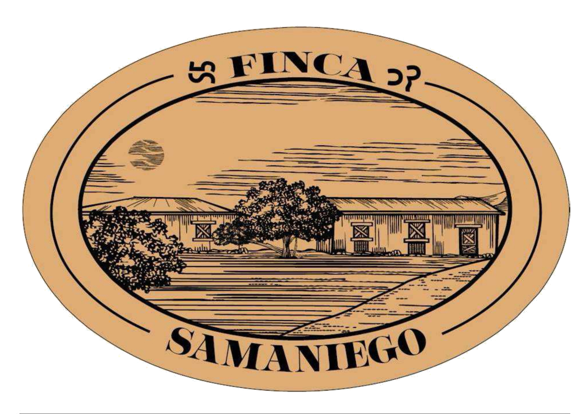

Chiltepines el vado
La tradicion del sabor Sonorense

La tradicion del sabor Sonorense
Llevar a cada mesa el sabor auténtico y la tradición del chiltepín sonorense, ofreciendo un producto cosechado con el cuidado y la pasión que nos ha caracterizado por generaciones.
Convertirnos en el referente nacional del chiltepín de alta gama, siendo embajadores del sabor y la cultura de Sonora en cada rincón del país y, eventualmente, más allá de nuestras fronteras.
Chiltepines silvestres seleccionados, perfectos para dar el toque tradicional a tus platillos favoritos.
Chiltepines silvestres seleccionados, perfectos para dar el toque tradicional a tus platillos favoritos.
Chiltepines silvestres seleccionados, perfectos para dar el toque tradicional a tus platillos favoritos.
ventas@fincasamaniego.com
+52 662 123 4567
Hermosillo,Sonora, México